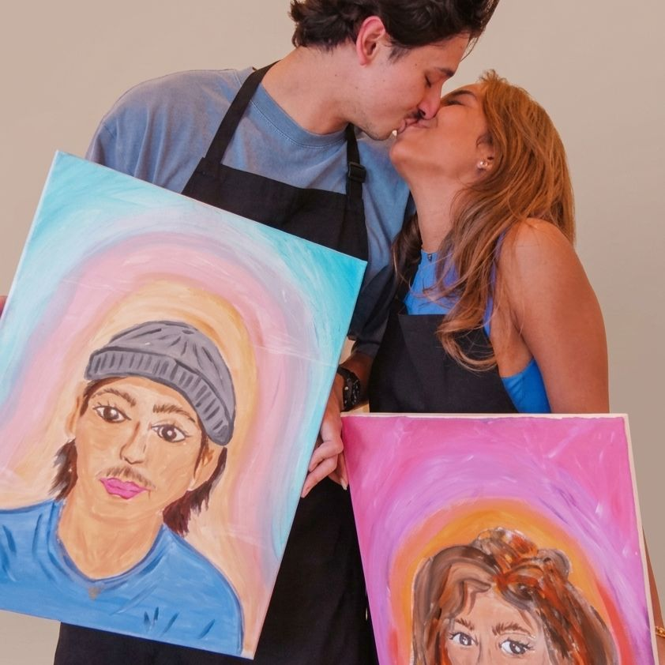
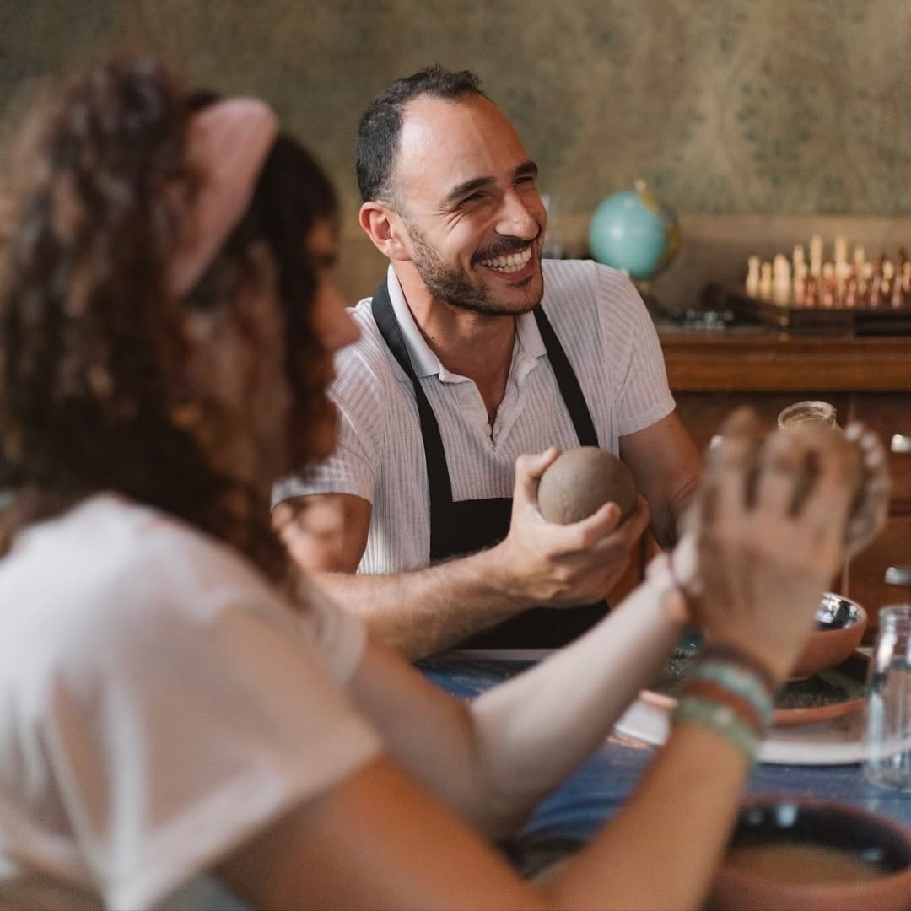
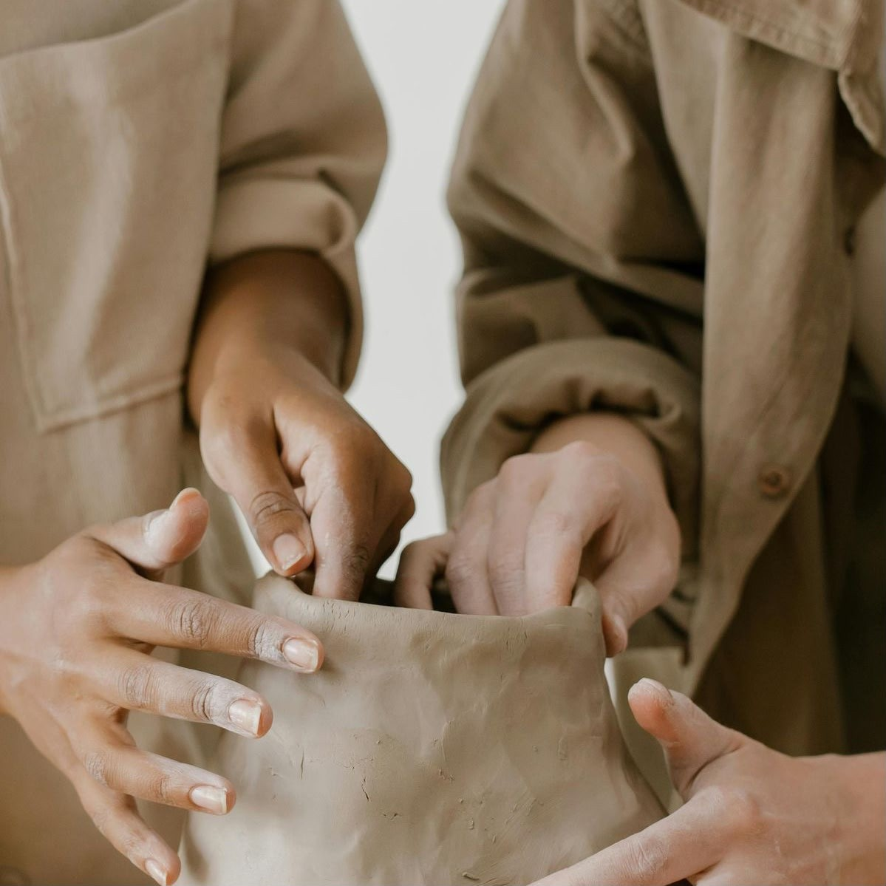
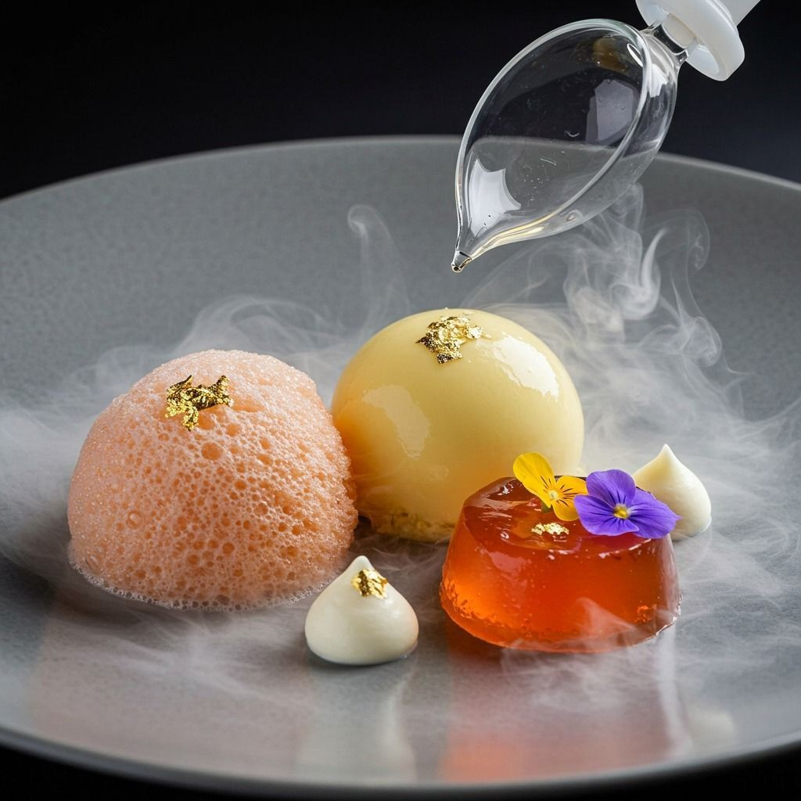
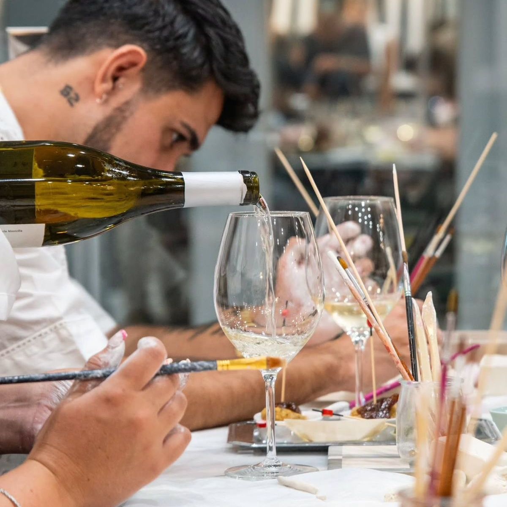
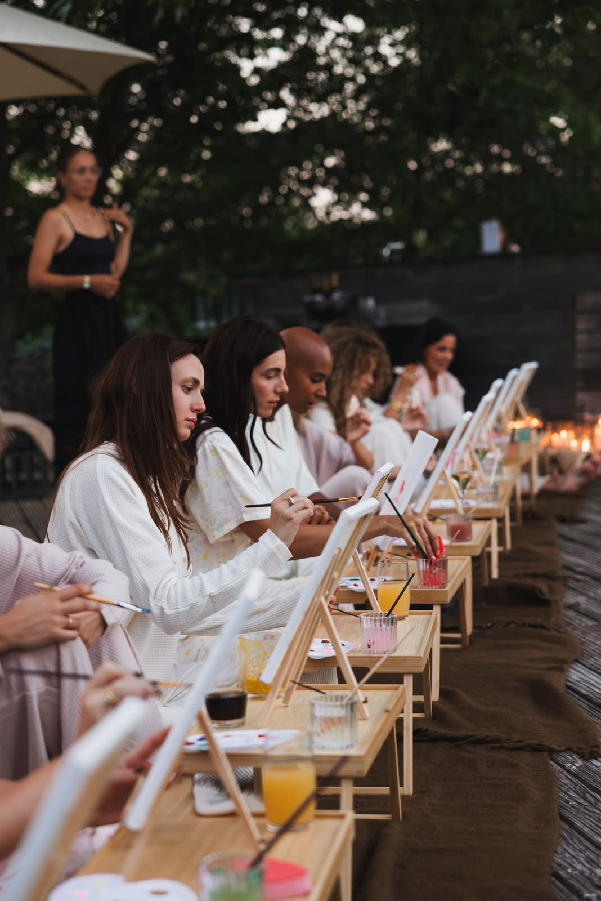

São Paulo é cheia de opções fora do óbvio para um encontro que vira memória. Reunimos 10 ideias de date criativo — de pintura com spritz a cerâmica a dois — pra você trocar a mesmice por uma experiência que vocês vão lembrar muito depois da sobremesa.


Marcar um date diferente em SP não precisa ser complicado. O problema do clássico "jantar e cinema" é que ele coloca vocês lado a lado olhando para uma tela — e não um para o outro. As experiências presenciais resolvem isso: vocês fazem algo juntos, conversam, riem, e ainda levam para casa o que criaram.
A seguir, separamos as ideias de encontro mais pedidas em São Paulo. Todas são curadas pela Elarah, com materiais inclusos e, em muitas, drinks na conta. É só escolher a vibe de vocês.
Toque em uma categoria para ver as experiências disponíveis e reservar.

Pintem uma taça (ou um quadro) com um Aperol na mão. O date instagramável favorito.
Ver experiência →
Mãos na argila, modelando uma peça juntos. Intimista, sensorial e cheio de risada.
Ver cerâmica →
Aprendam a montar os próprios drinks com um bartender. Date com clima de bar privativo.
Ver bartenderia →
Criem um perfume autoral a dois — e levem o cheiro do encontro para casa.
Ver experiência →
Cozinhem um menu juntos do aperitivo à sobremesa. Termina sempre num brinde.
Ver gastronomia →
Montem um arranjo a dois numa tarde leve e cheia de cor. Surpreendentemente romântico.
Ver floral →
Criem uma vela com a fragrância de vocês. Calmo, sensorial e diferente de tudo.
Ver velas →
Sem vontade de sair? A Elarah em Casa leva a experiência completa até a sua sala.
Ver Elarah em Casa →
Nossa seleção romântica favorita, reunida em um só lugar. Perfeita pra datas especiais.
Ver seleção →
Explore o catálogo completo de experiências presenciais em SP e escolha a de vocês.
Explorar tudo →Escolha pela vibe, não pelo preço. Um date criativo de R$150 vale mais que um jantar caro e silencioso — porque vocês interagem o tempo todo.
Reserve com antecedência. As experiências mais procuradas (pintura com spritz e cerâmica) costumam lotar nos fins de semana. Garanta a data com alguns dias de folga.
Combine com a rotina de vocês. Fim de tarde de sexta, brunch de domingo, aniversário de namoro — qualquer ocasião vira especial quando o programa é fora do óbvio. Veja também o que fazer em SP no final de semana.
As mais procuradas são pintura em taça com spritz, cerâmica a dois, aula de coquetelaria, oficina de perfumaria e gastronomia hands-on — todas experiências presenciais que substituem o tradicional jantar e cinema.
Há opções para diferentes orçamentos. A maioria das experiências a dois começa em cerca de R$150 por pessoa, com materiais inclusos e, em muitos casos, drinks e petiscos.
Sim. A linha Elarah em Casa leva a experiência completa até você, com materiais e instrutor — ideal para um date mais intimista.
Conta pra gente a vibe de vocês que a Elarah sugere a experiência perfeita — e cuida de tudo até o brinde final.